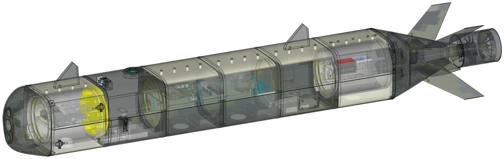
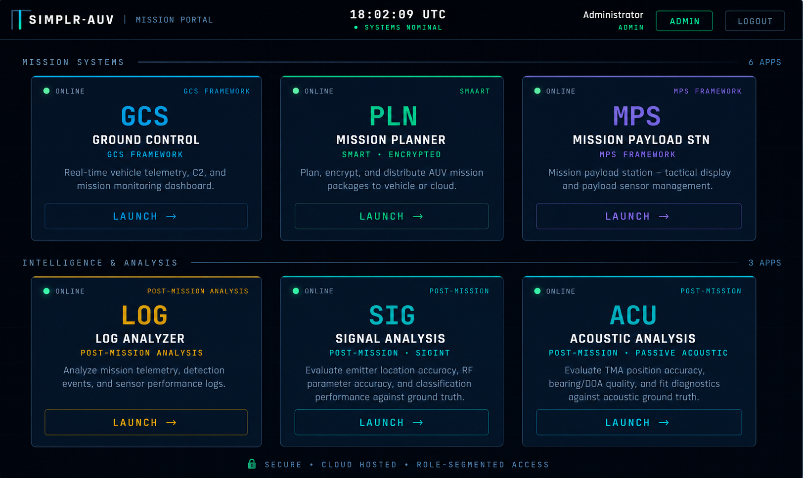
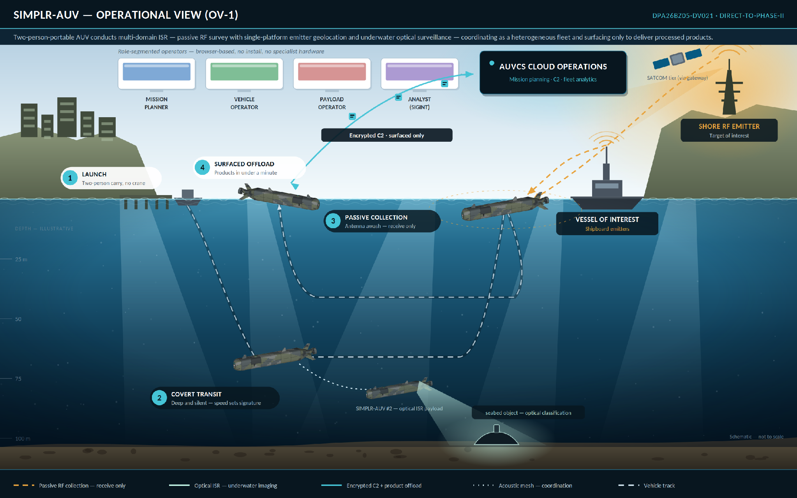

Adaptive Autonomy
Mission behavior can change as objectives, operating zones, vehicle state, observations, and available capabilities change.
COGNITIVE VEHICLES LLC
SIMPLR-AUV combines a modular underwater vehicle architecture, interchangeable mission payloads, and GIZMO mission orchestration to turn mission intent and sensed information into adaptive autonomous behavior.

SIMPLR-AUV
SIMPLR-AUV is designed as a mission platform rather than a single-purpose vehicle. Mechanical, electrical, payload, autonomy, and guidance interfaces are separated so new capabilities can be integrated without redesigning the entire system.
The architecture supports rapid experimentation, mission-specific sensing, and increasingly adaptive autonomy while keeping the execution stack inspectable and testable.
Public material describes the system architecture and development direction; performance claims will follow controlled test evidence.
THE VEHICLE
SIMPLR-AUV uses a free-flooding outer hull around two watertight electronics cylinders, with a wet-mounted pressure-tolerant energy module. The physical architecture separates mission sensing, vehicle management, energy, and payload functions while preserving common power, network, and mechanical interfaces.

Mission behavior can change as objectives, operating zones, vehicle state, observations, and available capabilities change.
Modular interfaces support rapid integration of mission payloads, guidance behaviors, sensor processing, and vehicle services.
Mission configurations can incorporate RF, passive acoustic, optical, navigation, and environmental sensing.
Software-defined capability and modular fabrication are emphasized over exquisite, tightly coupled vehicle hardware.
GIZMO MISSION ORCHESTRATION
GIZMO is the mission-orchestration layer within SIMPLR-AUV. It evaluates mission objectives, operating zones, vehicle state, observations, and available capabilities to determine when the vehicle should continue its nominal plan, intervene, resume, or complete an objective.
Public material intentionally describes capability and architecture without disclosing implementation-specific scoring, eligibility, or arbitration logic.
MISSION REASONING
OPEN SYSTEMS ENGINEERING
SIMPLR separates mission orchestration, guidance, vehicle control, hardware abstraction, and payload processing so each layer can evolve independently.
SYSTEM IN OPERATION
SIMPLR-AUV is supported by a browser-delivered mission environment for planning, vehicle operations, payload operations, and analysis.


ABOUT COGNITIVE VEHICLES
Cognitive Vehicles LLC develops autonomous vehicle architectures, mission software, sensing integration, and undersea robotic systems. SIMPLR-AUV is the company's principal development platform for modular autonomy, open mission interfaces, and rapidly reconfigurable undersea sensing.
Explore the SIMPLR-AUV repository →CONTACT
For research, integration, teaming, and program inquiries, contact Cognitive Vehicles LLC.
Cognitive Vehicles LLC
San Clemente, California
Autonomous Systems · Undersea Robotics · Mission Systems
cognitivevehicles@gmail.com